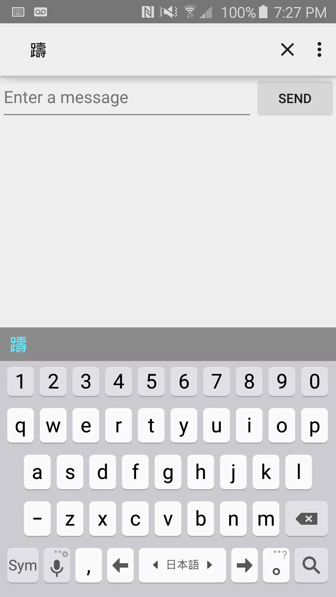
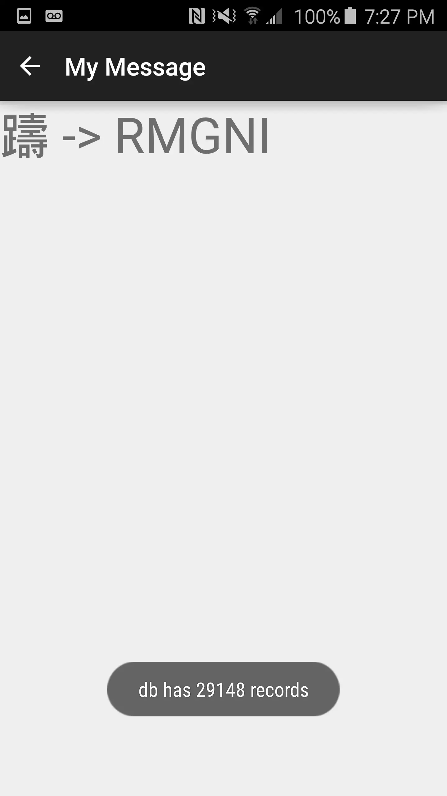
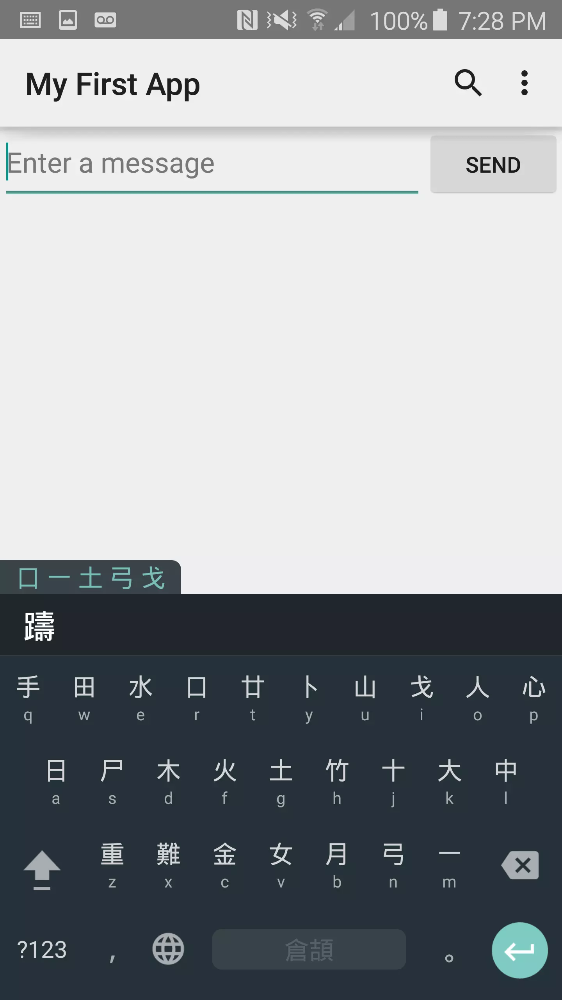

2015-05-23 First Android app
I’ve finally gotten around to scratching this itch I’ve had and writing this Android app to lookup how to type Chinese characters in Cangjie.
Cangjie is a graphological input method, meaning you type out the character the way it looks rather than how it sounds, like with some Chinese input methods like Pinyin or with Japanese. Knowing Cangjie is handy for studying written language where you don’t know how a character is pronounced. You just decompose the character according to some rules and type it in. The problem is there are a lot of exceptions and tricky cases where you might get stuck. Well, a lot of times, characters reuse components, and you might know how a similar character is pronounced and so you can input it with another method, but at the same time you want to remind yourself of how to key it in with Cangjie. This is the problem I wanted to solve.
Here’s an example character I can easily key in in Japanese. I want to remind myself how to type it with Cangjie… 
Voila! 
You take the code and you key it in with the Cangjie keyboard. Practice makes perfect. 
I thought this was a simple enough app to get into Android with, so I started off with the Android starter tutorials. The first tutorial gave me pretty much everything I needed as far as UI – then I added a SearchView to the action bar.
The hard part was setting up the database. I decided to piggyback off masaruyokoi’s ChineseCharConverter project. He used Ruby to build a tokyocabinet database to hash Chinese characters to their pronunciations and their Cangjie codes. tokyocabinet is nice and simple database written in C that also has Java bindings, so my plan was to build it for Android and ship the library and the database file with my Android application and access it from there.
That did not really go according to plan.
I really had a tough time figuring out how to properly cross-compile the library. First of all, I didn’t get the Android NDK toolset right at the start but rather downloaded a generic gcc package for aarch64 (this is appropriate for the arm64-v8a architecture of the Samsung S6 that I’m working with). But after I realized that I needed it and got it, I just focused on manually building the library rather than bother with an NDK setup. I just focused on my phone, but NDK contains all the toolchains to support all the Android architectures. I will want to go back and set up the C sources with a proper NDK build as part of the Android project itself. It looks like white-gecko did this conversion a while ago, so I’ll have to refer to his setup.
There was a dependency on bzip2, and I had to build the library itself along with the Java bindings. bzip2 was a simple Makefile project, while tokyocabinet used autoconf. It was quite tricky to configure and I had to tweak the resulting Makefiles. For instance, I had to make sure the soname did not have the version number at the end, otherwise the dynamic libraries can’t resolve and I get a java.lang.UnsatisfiedLinkError from the application. Here are assorted links that helped me figure out how to get it built:
- https://lists.gnu.org/archive/html/autoconf/2013-10/msg00004.html details about handling autoconf projects
- https://groups.google.com/forum/#!topic/android-ndk/uEu00ymmIms Platform numbering refers to NDK API, so don’t worry
- http://www.gnu.org/software/automake/manual/html_node/Cross_002dCompilation.html –build is your system, –host is the target system, and you should use a triplet that usually prefixes the compiler filename
- https://groups.google.com/forum/#!topic/android-ndk/vSH6MWPD0Vk glob.c/.h are necessary for tokyo-cabinet. Cross-compile it, make it executable, add it the list of libs to link
So I was able to get the prebuilt library and database shipped on the phone, but I was still having trouble because I couldn’t open the database. It took me a while trying different methods and locations of storing assets/resources, all the while wondering if I had a permission issue. Android takes care to abstract you from dealing with Files directly, but tokyocabinet actually wants you to give it a File to load its database from. In the end, after asserting I had permission to write, and I’d written a test database on the phone and sent it back to my desktop, I finally realized that the database itself was binary-incompatible across machines. I had to export what I needed from the database in a portable format and build the database up on the phone.
Anyways, I think I had a pretty fun coding session. Android Studio feels quite nice to work with, and I feel like I have gotten a good warmup with Android. As far as this app goes, I want to add a few more things before I put it up on Github, like search history.